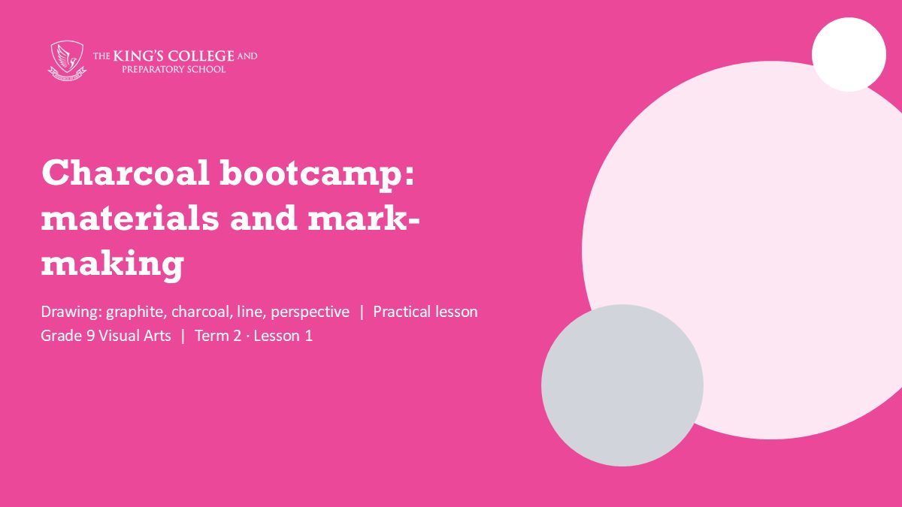

Term 2 · Lesson 1 · Practical lesson
Charcoal bootcamp: materials and mark-making
Start here
Today I will
- Know my charcoal materials and how to use them
- Control pressure, value and texture in timed rounds
- See how William Kentridge draws, erases and redraws
Most of you have only drawn in pencil. What do you think will be harder in charcoal, and what might be easier?
Words to know
- Vine charcoal
- Soft sticks of burnt vine or willow: light marks that smudge and erase easily.
- Compressed charcoal
- Pressed charcoal powder: darker, harder and harder to erase.
- Chamois
- A soft leather cloth used to soften or wipe charcoal off the paper.
- Smudging
- Rubbing charcoal to blend it; also the accidental smears we try to avoid.
- Erasure
- Rubbing out, which in charcoal leaves a ghost mark that can become part of the drawing.
- Line weight
- How thick, dark or light a line is, controlled by pressure.
Slides

Notes
Willow (vine) and compressed charcoal, charcoal pencil, putty eraser, chamois and blending stump; working loosely and letting go of perfection; a short look at how William Kentridge draws, erases and redraws.
Your charcoal toolkit
- Vine or willow charcoal: For planning and soft, light tones. Easy to erase.
- Compressed charcoal: For deep blacks at the end. Hard to remove.
- Charcoal pencil: For sharp lines and details with less mess.
- Putty eraser and chamois: Lift out lights; soften large areas.
- Blending stump: Blend small areas without using your fingers.
- Clean-working rules: Scrap paper under your hand, do not blow the dust, wash your hands before touching your face.
William Kentridge: drawing that moves
- Who: South African artist, born in Johannesburg in 1955.
- How he works: He draws in charcoal, films a frame, then erases and redraws to make animated films.
- Ghost marks: Traces of earlier drawings stay on the paper, like memory.
- What about: Johannesburg, apartheid, injustice and memory.
Charcoal rewards brave marks: plan light, finish dark.
In charcoal you can erase and start again, and the old marks still show. What does it mean that God's mercies are 'new every morning'?
Practical
You need: Vine and compressed charcoal, charcoal pencil, putty eraser, chamois, stump, newsprint
Charcoal bootcamp: six 5-minute rounds
- Round 1, pressure and line weight: lines from feather-light to heavy with vine, then compressed charcoal.
- Round 2, hatching without smudging: hatching and cross-hatching with your hand resting on scrap paper.
- Round 3, value ladder: five boxes from white to black, smooth steps.
- Round 4, 3D form: a sphere with highlight, core shadow, reflected light and cast shadow.
- Round 5, texture: invent four textures (fur, bark, stone, water) with the tip, side and broken marks.
- Round 6, smudge and lift: tone an area with the chamois, then lift out a shape with the putty eraser.
Test yourself
- Which charcoal do you use first, and why?
- How do you avoid smudging when you hatch?
- What does Kentridge do between filming the frames of his animations?
Show answers
1. Vine or willow charcoal, because it is light and erases easily. 2. Rest your hand on a piece of scrap paper and work from top to bottom (or left to right if you are right-handed). 3. He erases and redraws parts of the same charcoal drawing.
Finished early?
Show 3D form with the four parts of light and shadow.
- Draw a circle in your VJ with vine charcoal.
- Choose where the light comes from and lift out a highlight on that side.
- Add the core shadow, a thin band of reflected light near the edge, and a cast shadow on the table.
- Label the highlight, core shadow, reflected light and cast shadow.